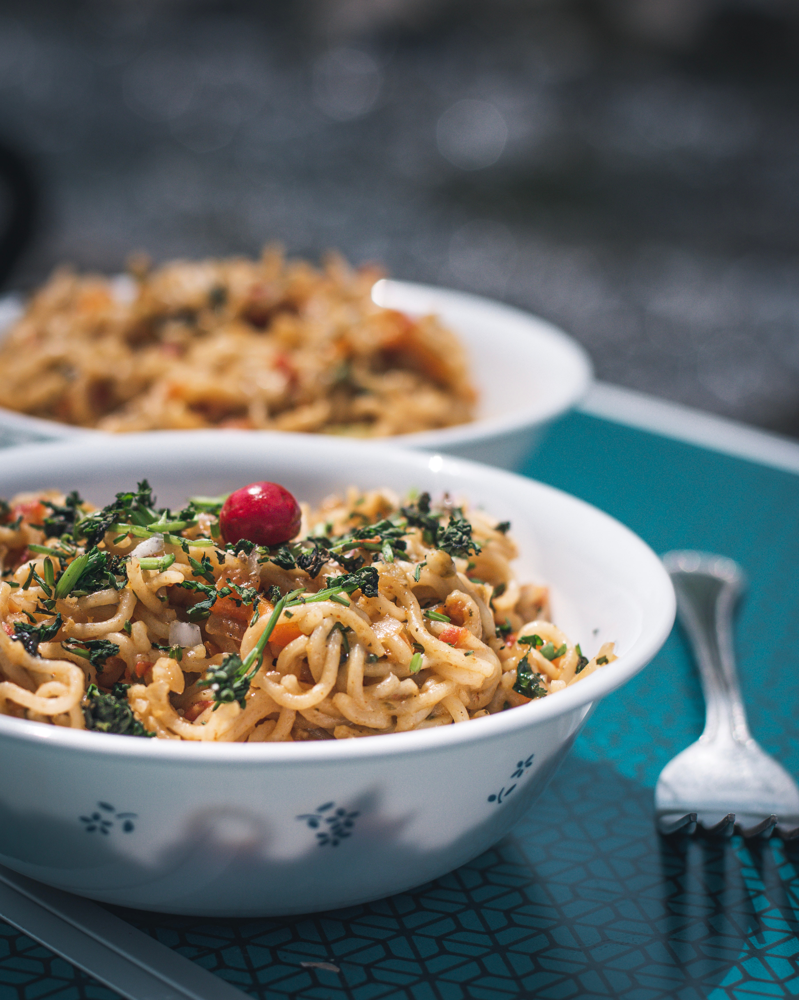

Maggi

Description
Maggi is an instant noodle from nestle, extremely popular in bangladesh, South Africe, Pakistan, Singapore, India, New Zealand among others. In India, Maggi Masala noodles carry a green dot, meaning they are specifially formulated to serve vegetarians. However, Maggi chicken noodles carry a red triangle, indicating that they are not vegetarian. This special formulation is not available in other countries, unless imported from India.
Ingredients
- 2 tsp oil
- 2 clove garlic & ½ onion
- ¼ tsp turmeric
- ½ tsp chilli powder
- ¼ tsp salt
- 1 cup water
- 1 pack maggi noodles
Steps
- In pan heat 2 tsp oil and saute 2 clove garlic and ½ onion.
- Saute until everything turn crunchy
- Further add ¼ tsp turmeric, ½ tsp chilli powder, ¼ tsp salt and saute
- Saute until the spices turn aromatic.
- Add 1 cup water and get to a boil.
- Now bread 1 pack maggi noodles roughly
- Mix well and boil for 2 minutes or until the noodles are cooked well.
- Serve!